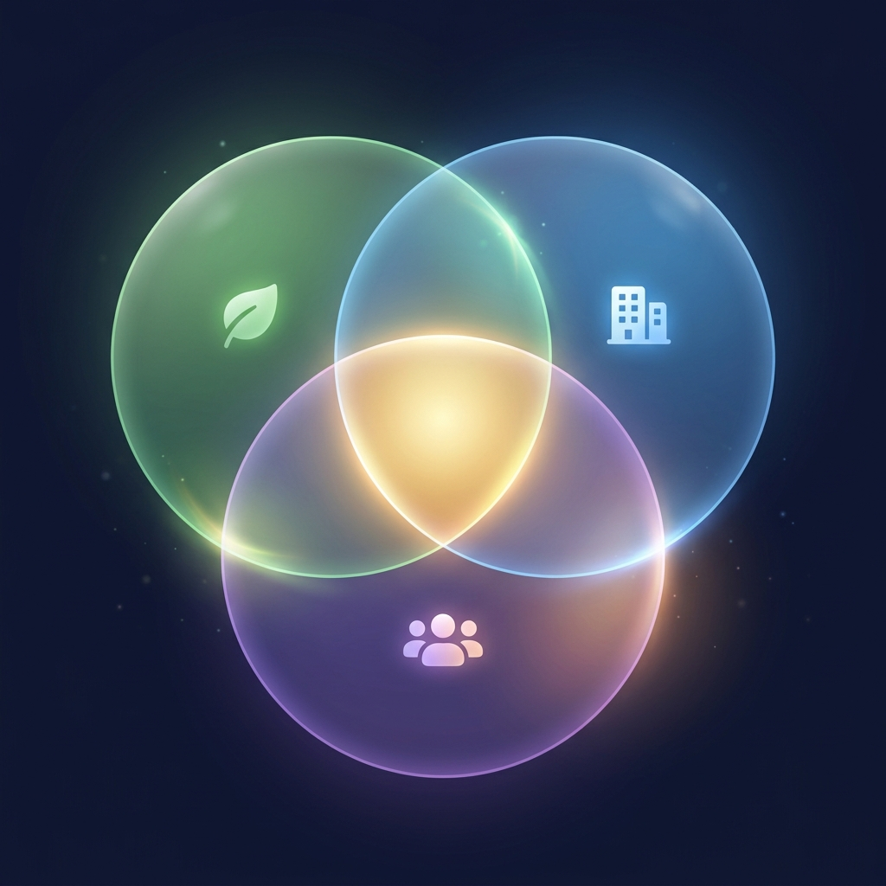
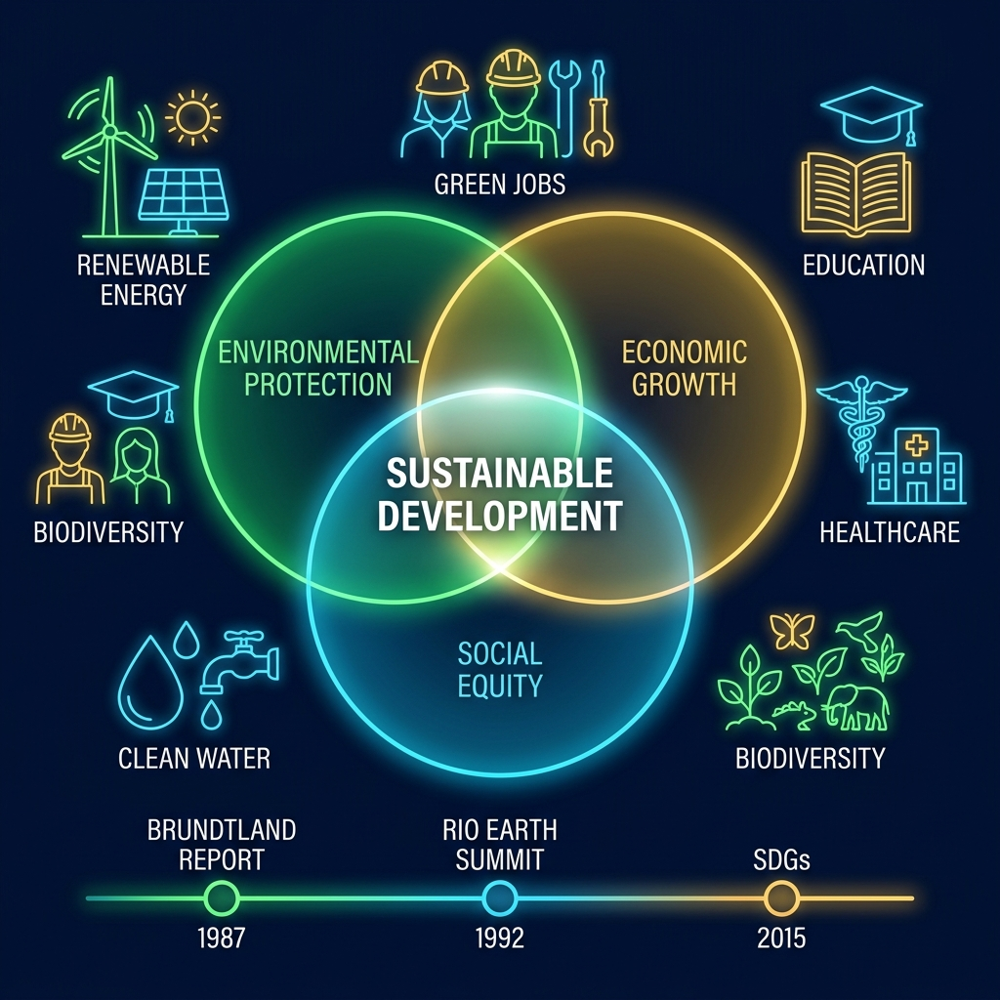
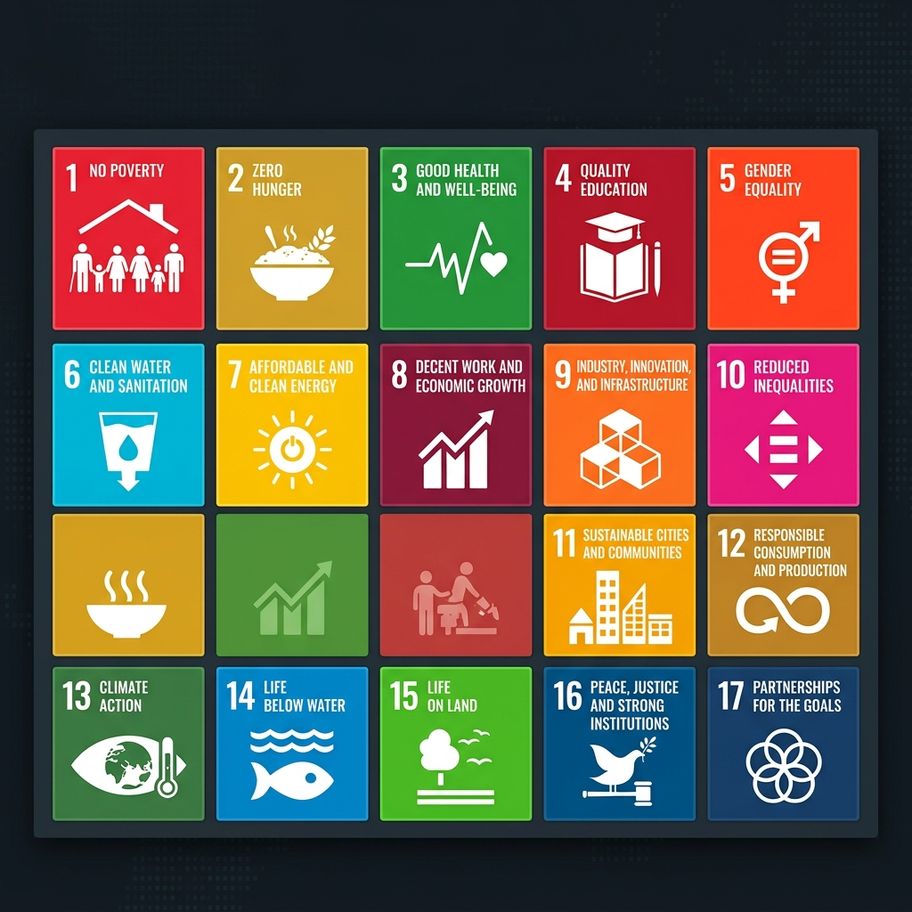
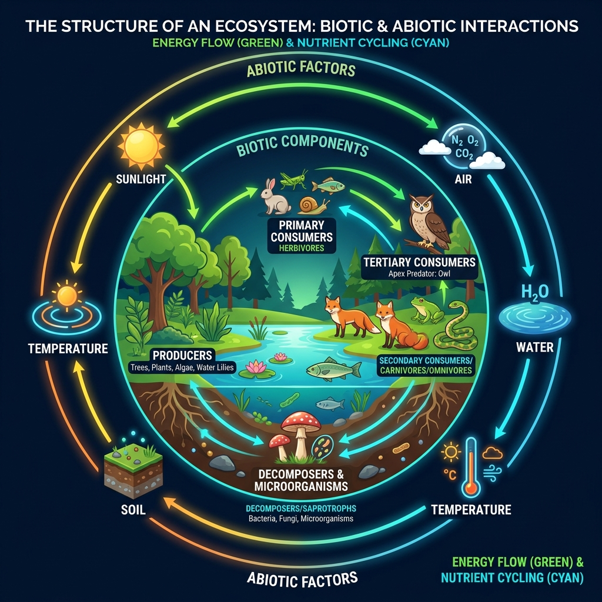
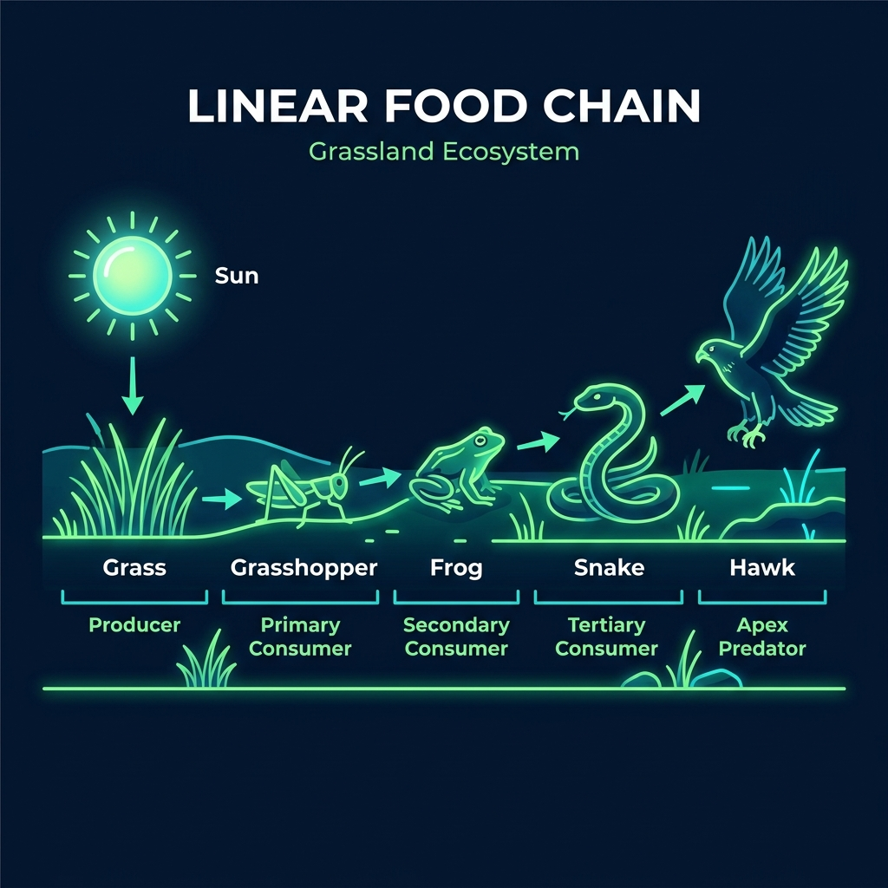
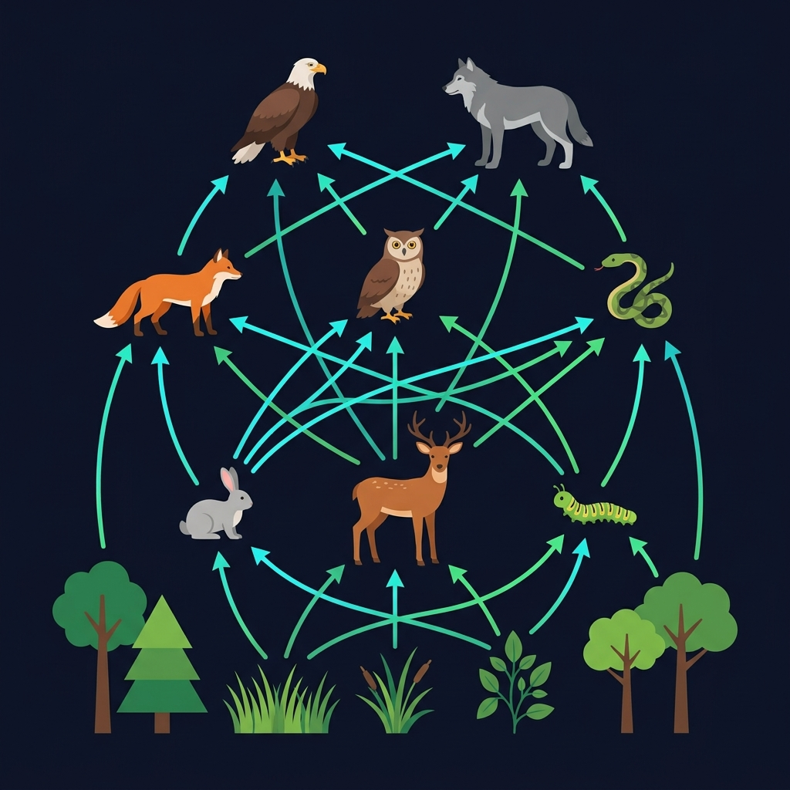
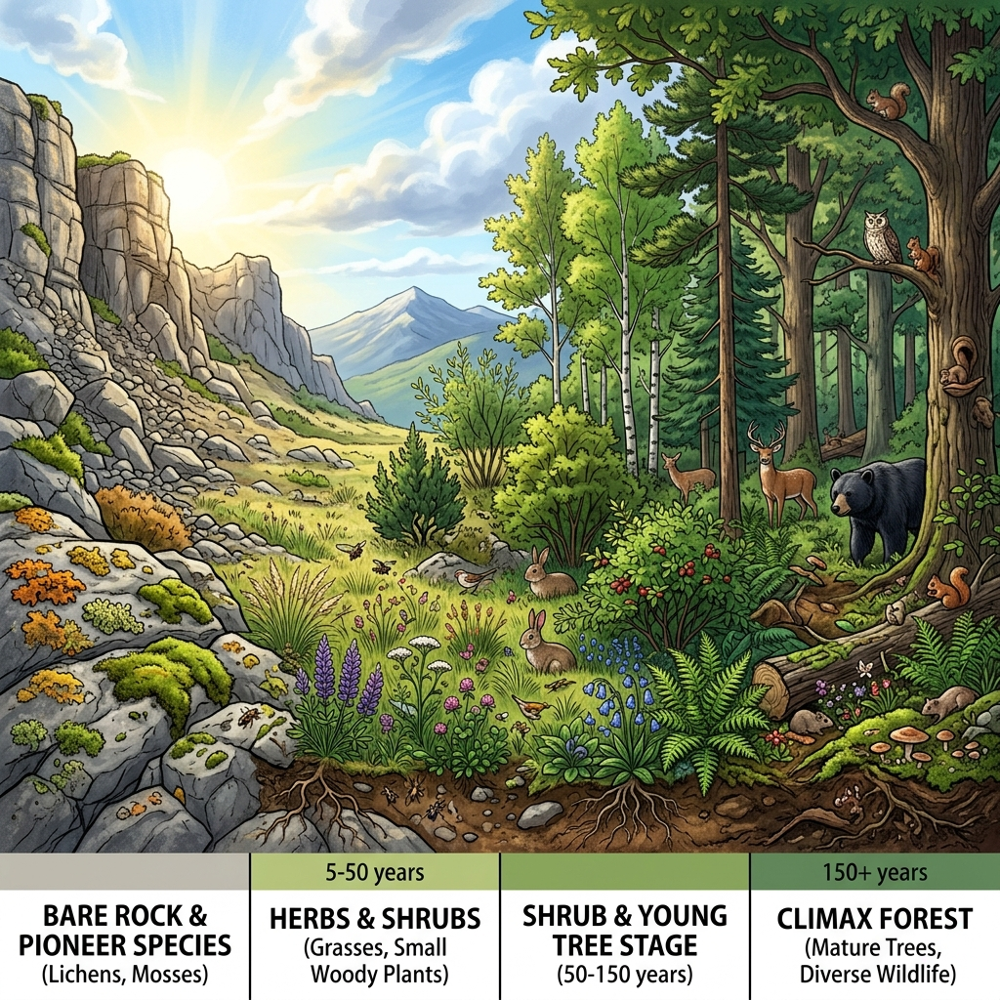
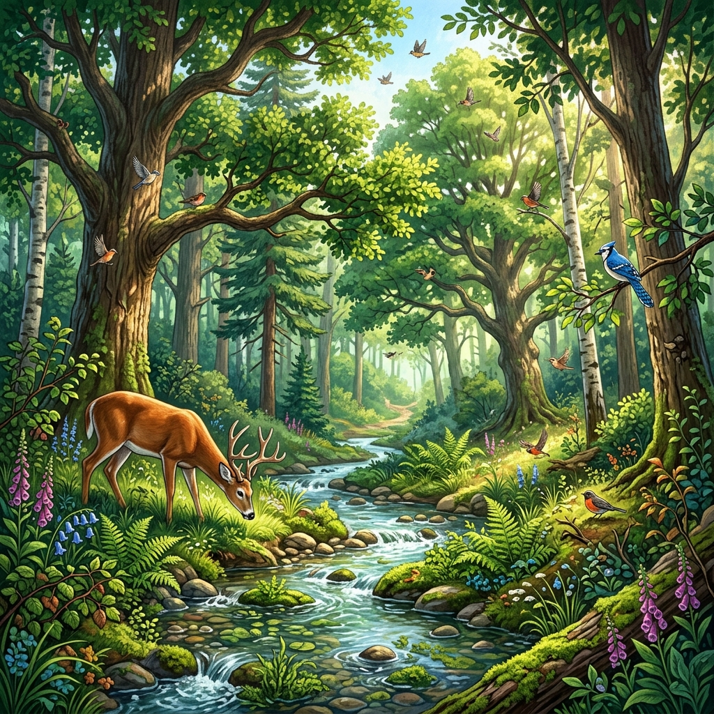
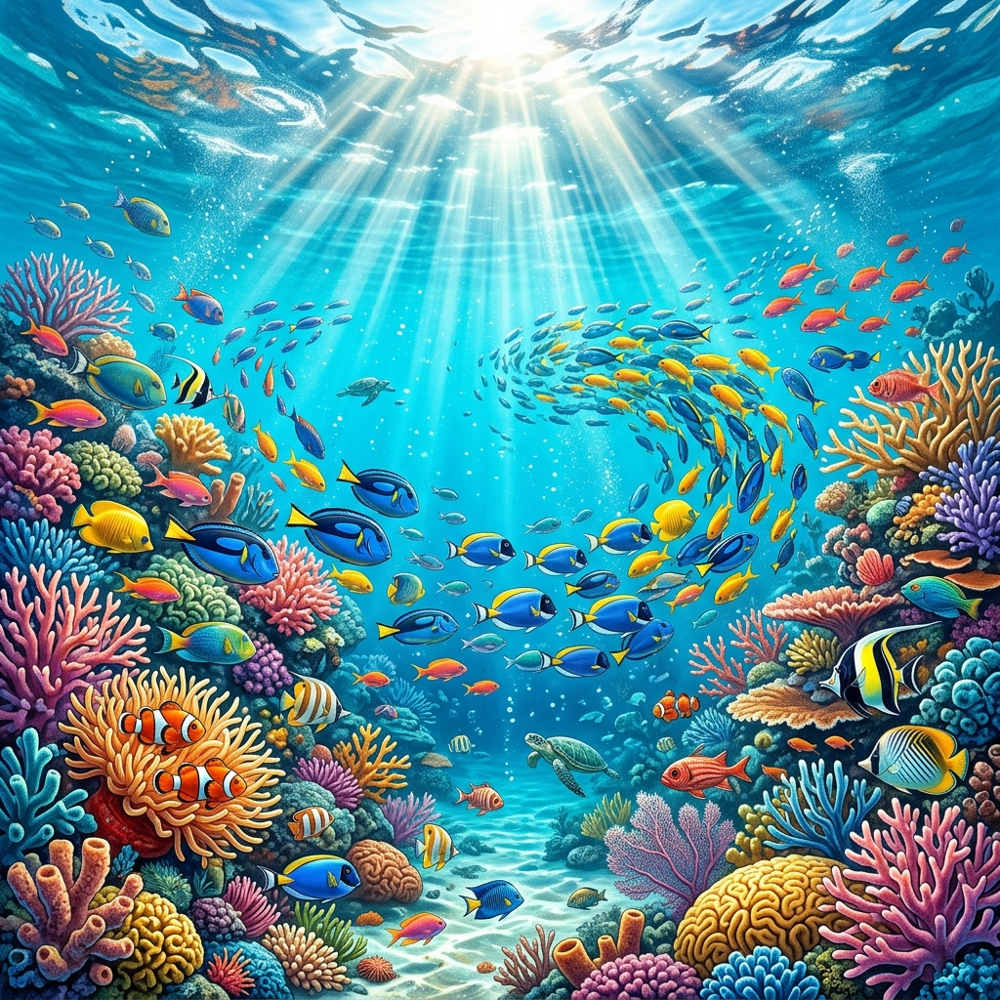
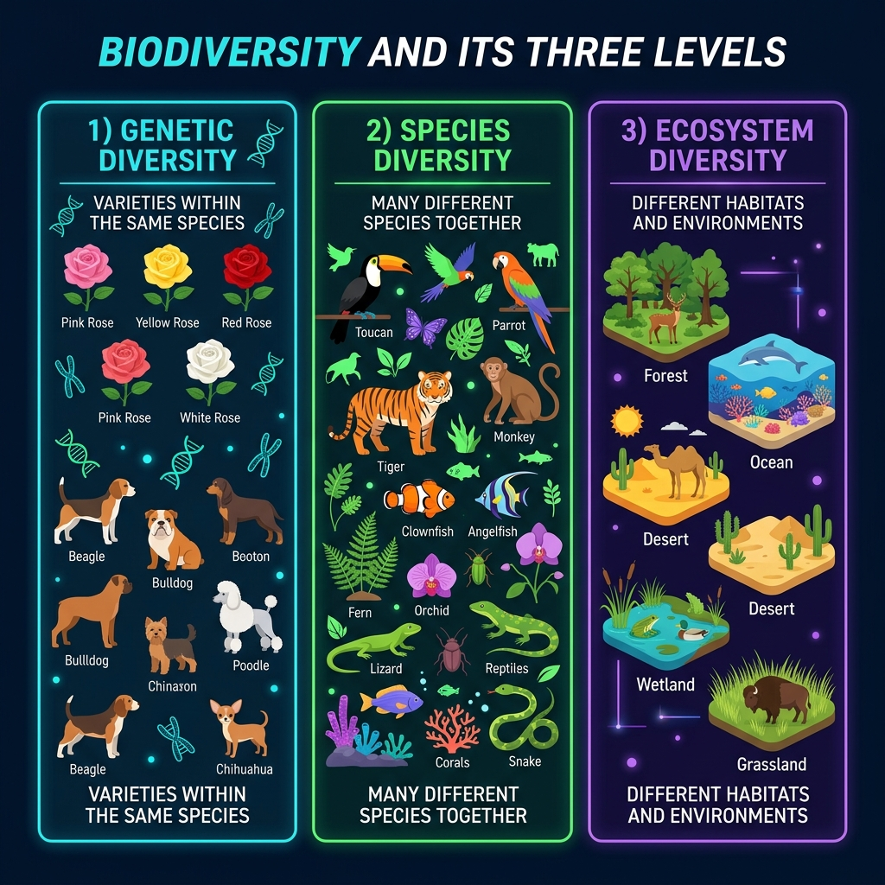

Introduction to Environmental Studies
Understanding our environment and our role in it
📖 Definition
Environmental Studies (EVS) is a multidisciplinary academic field that systematically studies human interaction with the environment. It integrates physical, biological, and social sciences to understand environmental problems and find sustainable solutions.
"The environment is everything that isn't me." — Albert Einstein
What is EVS?
A scientific study of the environment and the problems caused by human activities that affect nature.
Click to flip →Key Focus Areas
- Natural resource management
- Pollution & its control
- Biodiversity conservation
- Climate change awareness
- Sustainable development
Why Study EVS?
To create environmentally responsible citizens who can solve real-world environmental problems.
Click to flip →Core Goals
- Build environmental awareness
- Promote sustainable lifestyles
- Train future policymakers
- Encourage eco-friendly innovation
Nature of EVS
EVS is interdisciplinary — it draws from science, economics, law, sociology, and engineering.
Click to flip →Connected Disciplines
- Biology — Ecosystems & species
- Chemistry — Pollution analysis
- Geography — Land use & mapping
- Economics — Resource valuation
- Law — Environmental regulations
✅ Advantages of Studying EVS
- Builds awareness about environmental issues
- Encourages sustainable living and eco-friendly habits
- Provides interdisciplinary knowledge (science + society)
- Opens career paths in conservation, policy, and green tech
- Empowers students to make informed decisions
⚠️ Challenges / Limitations
- Broad subject — hard to specialize deeply in one area
- Solutions require political will and community cooperation
- Data collection on environment can be complex
- Gap between theory and real-world implementation
- Often underfunded compared to other STEM fields
Climate Awareness
Understand global warming and its real impacts on communities.
Pollution Control
Learn how industries affect air, water, and soil quality.
Policy Making
Helps create environmental laws and regulations.
Citizen Responsibility
Develops environmentally conscious and responsible citizens.
Jumble Word Challenge — EVS Terms
Click the scrambled letters in the right order to form the EVS word!
Multidisciplinary Nature of EVS
How different fields come together to study our environment
📖 Definition
Multidisciplinary nature means EVS does not belong to a single branch of study. It combines knowledge from Biology, Chemistry, Physics, Geography, Economics, Sociology, Engineering, Law, and Public Health to understand and solve environmental problems holistically.
Biology & Ecology
Studies ecosystems, food chains, biodiversity, and species interaction with their habitats.
Click to flip →Contribution to EVS
Helps understand how organisms depend on each other and what happens when ecosystems are disturbed.
Example: Study of coral reef bleaching
Chemistry
Analyzes pollutants, chemical reactions in atmosphere, water contamination, and soil chemistry.
Click to flip →Contribution to EVS
Helps measure pollution levels, detect toxins, and develop green chemistry solutions.
Example: Testing water pH levels for safety
Economics
Studies resource allocation, cost-benefit of environmental policies, and green economy models.
Click to flip →Contribution to EVS
Helps put a monetary value on natural resources and evaluate the economic impact of pollution.
Example: Carbon credit trading systems
Sociology
Studies human behavior, community attitudes toward environment, and environmental justice.
Click to flip →Contribution to EVS
Helps understand why people pollute, how to change behaviors, and how environmental damage affects communities unequally.
Example: Environmental racism studies
Engineering
Designs green buildings, waste treatment plants, renewable energy systems, and clean technologies.
Click to flip →Contribution to EVS
Develops practical solutions: solar panels, water filters, electric vehicles, and recycling systems.
Example: Building zero-waste factories
Law & Policy
Creates environmental regulations, enforces pollution standards, and protects endangered species.
Click to flip →Contribution to EVS
Provides the legal framework for environmental protection — from national laws to international treaties.
Example: Paris Climate Agreement 2015
✅ Advantages of Multidisciplinary Approach
- Provides a holistic understanding of environmental issues
- Solutions are more effective when multiple perspectives are considered
- Bridges the gap between science and policy
- Encourages collaboration among experts
- Produces well-rounded professionals
⚠️ Challenges
- Difficult to integrate knowledge from very different fields
- Experts may have conflicting viewpoints
- Requires broad training which can be time-consuming
- Coordination between disciplines is complex
- May lack depth in individual areas
Game 1: Discipline Matcher
Match each discipline to its EVS contribution!
📚 Discipline
🌍 EVS Contribution
Cause & Effect Chain — Daily Life Edition
What happens when you do these everyday things? Pick the correct environmental effect!
Scope of Environmental Studies
The wide range of areas EVS covers
📖 Definition
Scope of EVS refers to the wide range of areas that environmental studies covers. It encompasses the study of natural resources, ecosystems, pollution, population dynamics, social issues, and their interconnections with human development and well-being.
Natural Resources
Study of forests, water, minerals, soil, and energy resources — both renewable and non-renewable.
Click to flip →Why It Matters
- Resources are finite — we must conserve them
- Over-extraction causes ecological damage
- Sustainable harvesting ensures long-term availability
Ecology & Biodiversity
Study of ecosystems, habitats, food webs, and the incredible diversity of life on Earth.
Click to flip →Why It Matters
- Biodiversity loss disrupts ecosystems
- Each species plays a unique role
- Conservation protects the web of life
Pollution
Air, water, soil, noise, and thermal pollution — their causes, effects, and control measures.
Click to flip →Types of Pollution
- Air: vehicle emissions, factories
- Water: industrial waste, sewage
- Soil: pesticides, plastics
- Noise: traffic, construction
Social Issues
Population growth, urbanization, environmental justice, and the human dimension of environmental problems.
Click to flip →Key Concerns
- Population pressure on resources
- Unequal impact on vulnerable communities
- Need for environmental education
- Public health and environment link
✅ Advantages of Understanding Scope
- Helps identify which environmental problems need urgent attention
- Guides research priorities and funding allocation
- Shows interconnections between seemingly unrelated issues
- Encourages comprehensive policy-making
⚠️ Challenges
- The scope is so broad it can feel overwhelming
- Hard to prioritize when everything seems important
- Different stakeholders may disagree on priorities
- Local vs global scope conflicts
Game 2: Scope Explorer Quiz
Test your knowledge with timed multiple-choice questions!
Daily Life Eco Scenarios 🏡
You face these situations every day — what's the best eco-friendly choice?
Importance of Environmental Studies
Why every student must understand the environment
📖 Why EVS Is Important
Environmental Studies is crucial because it helps us understand the delicate balance of nature, the impact of human activities, and the steps we must take to protect our planet. It creates environmentally literate citizens who can make informed decisions.
Resource Conservation
Teaches us to use water, forests, minerals, and energy wisely so future generations can also use them.
Click to flip →Real Impact
Freshwater is only 2.5% of Earth's water. Without conservation, billions could face water scarcity by 2050.
Pollution Reduction
Helps identify pollution sources and develop cleaner technologies and practices.
Click to flip →Real Impact
Air pollution causes 7 million premature deaths yearly. EVS knowledge helps design cleaner cities.
Biodiversity Protection
Preserving species and habitats that are essential for ecosystem balance and human survival.
Click to flip →Real Impact
1 million species face extinction. Protecting biodiversity means protecting our food, medicine, and clean air.
Public Health
Clean environment = healthier people. EVS connects environmental quality with human health outcomes.
Click to flip →Real Impact
23% of global deaths are linked to environmental factors. EVS education can help reduce this dramatically.
✅ Why It's Important
- Creates informed citizens who can vote for green policies
- Builds careers in environmental science, policy, and tech
- Directly improves quality of life and public health
- Essential for India's sustainable development targets
- Mandatory subject by UGC for all undergraduate programs
⚠️ Consequences of Ignoring EVS
- Accelerated climate change and global warming
- Depletion of non-renewable resources
- Loss of biodiversity and ecosystem collapse
- Increased frequency of natural disasters
- Worsening public health crises
Game 3: True or False Rapid Fire 🔥
How fast can you sort the facts? Build your streak!
Rebus Puzzle — Combine & Guess! 🔤
Each card has a syllable — combine them all to find the hidden EVS word!
Sustainability & Sustainable Development
Building a future that doesn't steal from tomorrow
📖 Definition — Sustainability
Sustainability is the ability to meet the needs of the present without compromising the ability of future generations to meet their own needs. It is about using resources wisely, living within ecological limits, and maintaining balance.
"Sustainable development is development that meets the needs of the present without compromising the ability of future generations to meet their own needs." — Brundtland Commission, 1987


Environmental Pillar
Protect ecosystems, reduce pollution, conserve resources, and maintain ecological balance.
Click to flip →Actions
- Reduce carbon emissions
- Protect forests & oceans
- Use renewable energy
- Reduce waste generation
Economic Pillar
Grow the economy without depleting resources or causing environmental degradation.
Click to flip →Actions
- Invest in green technology
- Support circular economy models
- Create green jobs
- Fair trade practices
Social Pillar
Ensure quality of life, equality, education, healthcare, and social justice for all people.
Click to flip →Actions
- Provide quality education for all
- Ensure clean water access
- Promote gender equality
- Build inclusive communities
📖 Sustainable Development
Sustainable Development is the practice of developing societies and economies in a way that balances economic growth, environmental protection, and social well-being — without depleting resources for future generations.
It was first defined in the Brundtland Report (1987), also known as "Our Common Future." The concept was adopted globally through the Earth Summit (Rio, 1992) and further refined through the Millennium Development Goals (2000) and the Sustainable Development Goals (2015).
✅ Advantages of Sustainability
- Preserves natural resources for future generations
- Reduces environmental degradation and pollution
- Creates green jobs and economic opportunities
- Improves public health and quality of life
- Builds climate resilience in communities
⚠️ Challenges of Sustainability
- High initial investment costs for green technology
- Requires fundamental changes in behavior and industry
- Developing nations may face economic trade-offs
- Greenwashing — companies pretending to be sustainable
- Short-term political thinking vs long-term planning
Game 4: Sustainability Sorter ♻️
Is this action Sustainable or Unsustainable? Sort them correctly!
Mini Crossword — Sustainability Terms
Fill in the blanks with EVS terms you encounter daily!
📋 Across
📋 Down
Sustainable Development Goals (SDGs)
17 Global Goals for People, Planet, and Prosperity by 2030
📖 What Are SDGs?
The Sustainable Development Goals (SDGs) are 17 interconnected global goals adopted by the United Nations in 2015 as part of the 2030 Agenda for Sustainable Development. They are a universal call to action to end poverty, protect the planet, and ensure peace and prosperity for all people. Each goal has specific targets (169 total) and indicators (232 total) to measure progress.

🎯 Click any goal to learn more!
✅ Advantages of SDGs
- Provides a shared global framework for development
- Encourages cooperation between nations
- Addresses interconnected issues holistically
- Measurable targets with clear deadlines (2030)
- Inclusive — "Leave No One Behind" principle
⚠️ Challenges
- Not legally binding — relies on voluntary commitment
- Difficult to achieve in developing nations with limited resources
- Some goals may conflict with each other
- Progress is uneven across countries
- COVID-19 pandemic reversed years of progress
Universal Application
Applies to ALL countries — rich and poor, developed and developing.
Interconnected Goals
Progress in one goal supports progress in others.
Measurable Progress
169 targets and 232 indicators track real progress.
Partnership Focus
Goal 17 specifically encourages global collaboration.
Game 5: SDG Memory Match 🧠
Flip cards and match each SDG number to its name!
Word Search — Find Hidden SDG Words!
Click letters in the grid to find words related to the SDGs. Words can be horizontal or vertical!
🔍 Words to Find:
Ecosystem — The Web of Life 🌍
How living and non-living things interact to form a functional unit
📖 Definition
An Ecosystem is a community of living organisms (biotic) interacting with their physical environment (abiotic) as a system.
Structure and Function of Ecosystem: The structure is made up of Biotic (living) and Abiotic (non-living) components. The function is how these components interact to sustain life, primarily through Energy Flow and Nutrient Cycling.
Energy Flow in an Ecosystem: Energy enters as sunlight, is captured by producers (plants), and flows linearly through consumers (animals) and decomposers via Food Chains and Food Webs. Energy is lost as heat at each step (10% Law).
"An ecosystem is a community of living organisms in conjunction with the nonliving components of their environment, interacting as a system." — Arthur Tansley

Biotic Components
All living organisms in an ecosystem — producers, consumers, and decomposers.
Click to flip →Categories
- Producers — plants, algae (make food)
- Consumers — herbivores, carnivores, omnivores
- Decomposers — bacteria, fungi (recycle)
- All interact through feeding relationships
Abiotic Components
Non-living physical and chemical factors — sunlight, water, temperature, soil, air, minerals.
Click to flip →Key Abiotic Factors
- Sunlight — primary energy source
- Water — essential for all life
- Temperature — determines species range
- Soil — provides nutrients and support
- Air — gases for respiration/photosynthesis
Energy Flow
Energy enters via sunlight, flows through trophic levels, and exits as heat. It's one-way!
Click to flip →How Energy Flows
- Sun → Producers (photosynthesis)
- Producers → Herbivores → Carnivores
- Energy is lost as heat at each level
- Energy flow is unidirectional
Nutrient Cycling
Unlike energy, nutrients cycle through ecosystems repeatedly — from soil to organisms and back.
Click to flip →Major Cycles
- Carbon Cycle — CO₂ in air ↔ organisms
- Nitrogen Cycle — N₂ fixation by bacteria
- Water Cycle — evaporation, rain, runoff
- Phosphorus Cycle — rocks → soil → organisms
Types of Ecosystems
Ecosystems vary from tiny ponds to vast oceans, from dense forests to dry deserts.
Click to flip →Major Types
- Terrestrial — forests, grasslands, deserts
- Aquatic — freshwater (ponds, rivers)
- Marine — oceans, coral reefs
- Artificial — crop fields, aquariums
✅ Ecosystem Functions
- Produces oxygen and absorbs CO₂
- Purifies water through natural filtration
- Provides food, fuel, and medicines
- Regulates climate and weather patterns
- Recycles nutrients and decomposes waste
⚠️ Threats to Ecosystems
- Deforestation destroys terrestrial ecosystems
- Pollution contaminates water and soil
- Climate change shifts temperature zones
- Urbanization replaces natural habitats
- Overexploitation depletes resources faster than renewal
Ecosystem Services
Nature provides free services worth $125 trillion/year — clean air, water, pollination, climate regulation.
Habitat Provision
Every species needs a specific habitat — destroy it and you destroy the species.
Climate Regulation
Forests and oceans absorb CO₂ and regulate global temperatures.
Medicine Source
Over 50% of medicines come from natural compounds found in ecosystems.
Game: Trophic Level Master 🦁
Classify each organism into its correct trophic level in the ecosystem!
Food Chain — Energy in a Line 🔗
How energy flows from one organism to the next
📖 Definition
A Food Chain is a linear sequence of organisms through which nutrients and energy pass as one organism eats another. It starts with a producer (plant), moves to primary consumers (herbivores), then to secondary consumers (carnivores), and finally to tertiary consumers (top predators). Decomposers break down dead organisms at every level.
"In nature, there is no such thing as a free lunch — every organism must eat, and every organism will be eaten." — Ecological Principle

Producers (Autotrophs)
Plants, algae, and photosynthetic bacteria that make their own food from sunlight through photosynthesis.
Click to flip →Examples & Role
- Grass, trees, phytoplankton, algae
- Convert solar energy → chemical energy
- Form the base of every food chain
- Produce oxygen as a byproduct
Primary Consumers
Herbivores that eat producers directly. They are the first link in transferring energy up the chain.
Click to flip →Examples & Role
- Grasshopper, rabbit, deer, caterpillar
- Eat plants and convert plant energy
- Only ~10% of energy transfers up
- Control plant population growth
Secondary Consumers
Carnivores or omnivores that eat primary consumers. They control herbivore populations.
Click to flip →Examples & Role
- Frog, snake, small fish, lizard
- Eat herbivores for energy
- Keep herbivore populations in check
- Can be prey for larger predators
Tertiary / Apex Predators
Top predators with no natural enemies. They sit at the top of the food chain.
Click to flip →Examples & Role
- Eagle, lion, shark, tiger, wolf
- Regulate entire ecosystem balance
- Have no natural predators
- Their removal causes cascading effects
Decomposers
Organisms that break down dead matter and return nutrients to the soil, completing the cycle.
Click to flip →Examples & Role
- Bacteria, fungi, earthworms
- Break dead organisms into nutrients
- Recycle nutrients back to soil
- Essential for nutrient cycling
✅ Key Concepts
- Energy flows in ONE direction: Producer → Consumer
- Only ~10% energy transfers between trophic levels (10% Rule)
- Food chains are usually 4-5 levels long
- Shorter chains = more efficient energy transfer
- Decomposers operate at every level
⚠️ What Happens When a Link Breaks?
- If producers decline → entire chain collapses
- Removing predators → herbivore overpopulation
- Pesticides accumulate up the chain (bioaccumulation)
- Extinction of one species affects all connected species
- Human activities are the biggest disruptors
10% Rule
Only 10% of energy passes from one trophic level to the next. 90% is lost as heat.
Bioaccumulation
Toxins concentrate as they move up the chain — top predators are most affected.
Trophic Levels
Each step in the food chain is a trophic level, from T1 (producers) to T4/T5 (apex).
Nutrient Cycling
Decomposers return nutrients to soil, enabling producers to grow again.
Game: Build the Food Chain! 🔗
Click the organisms in the correct order to build a complete food chain!
Food Web — Nature's Network 🕸️
The complex, interconnected feeding relationships in an ecosystem
📖 Definition
A Food Web is an interconnected network of multiple food chains in an ecosystem. Unlike a simple food chain, a food web shows that most organisms eat more than one type of food and are eaten by more than one predator. It represents the realistic feeding relationships in nature.
"A food web is a more accurate representation of 'who eats whom' in an ecosystem than any single food chain."

Web Structure
A food web is made of many interconnected food chains. One organism can belong to multiple chains.
Click to flip →Why Webs, Not Chains?
- Most animals eat multiple food sources
- One prey can have many predators
- More connections = more stability
- Reflects real ecosystems better
Energy Flow in Webs
Energy enters through producers and flows through multiple pathways to different consumers.
Click to flip →Key Points
- Energy still follows the 10% rule
- Multiple pathways distribute energy
- Losing one path doesn't collapse the web
- More diverse webs = more resilient
Keystone Species
Species that have a disproportionately large impact on the food web relative to their population.
Click to flip →Famous Examples
- Wolves in Yellowstone — controlled elk
- Sea otters — protect kelp forests
- Bees — pollinate 75% of crops
- Removing them collapses the web
Trophic Cascade
When changes at one trophic level ripple through the entire food web, affecting all levels.
Click to flip →How It Works
- Remove top predator → herbivores explode
- Too many herbivores → plants destroyed
- No plants → soil erosion, habitat loss
- Wolves returning to Yellowstone fixed rivers!
✅ Food Web vs Food Chain
- Food webs show the COMPLETE picture of feeding
- More connections = greater ecosystem stability
- Organisms can switch food sources if one declines
- Better for understanding real ecological relationships
- Helps predict impact of species loss
⚠️ Threats to Food Webs
- Invasive species disrupt existing connections
- Pollution weakens organisms at all levels
- Habitat destruction removes entire species
- Climate change shifts species ranges
- Overfishing removes key web connections
Ecological Succession — Nature's Recovery 🌋
How ecosystems change and develop over time
📖 Definition
Ecological Succession is the process by which the structure of a biological community evolves over time. It can happen after a disaster (like a volcano or fire) or in completely new habitats (like bare rock).

✅ Primary Succession
- Starts from BARE ROCK (no soil).
- Examples: Lava flows in Hawaii, newly formed islands.
- Pioneer species (like lichens) break down rock to create soil.
- Takes hundreds or thousands of years.
⚠️ Secondary Succession
- Starts where SOIL is already present.
- Examples: After a forest fire (like Yellowstone) or abandoned farmland.
- Faster process because soil and some seeds survive.
- Ends in a stable "climax community" (like a mature forest).
Terrestrial Ecosystems — Life on Land 🌲
Forests, Grasslands, and Deserts
Forest Ecosystem
Dominated by trees, high rainfall, and incredible biodiversity.
Click to flip →Examples & Features
- Amazon Rainforest, Taiga
- Acts as the "lungs of the Earth"
- High canopy, dense undergrowth
- Threatened by deforestation
Grassland Ecosystem
Wide open spaces dominated by grasses, with moderate rainfall.
Click to flip →Examples & Features
- African Savanna, North American Prairies
- Home to large grazing herbivores
- Prone to natural wildfires
- Crucial for agriculture
Desert Ecosystem
Extreme temperatures and very low rainfall. Highly adapted life.
Click to flip →Examples & Features
- Sahara Desert, Thar Desert
- Plants store water (succulents)
- Animals are often nocturnal
- Fragile, slow-recovering ecosystem

Aquatic Ecosystems — Water Worlds 🌊
Freshwater and Marine ecosystems

💧 Freshwater (Low Salt)
- Lakes & Ponds: Still water (lentic). Ponds are shallow; lakes have deep, dark zones.
- Rivers & Streams: Flowing water (lotic). High oxygen, fast-moving. (e.g., Amazon River)
🌊 Marine (High Salt)
- Oceans: Cover 71% of Earth. Deep, stable environments. (e.g., Pacific Ocean)
- Estuaries: Where river meets ocean. Brackish water, incredibly high biodiversity.
Game: Biome Matcher 🌎
Match the characteristic to the correct ecosystem!
Biodiversity — The Variety of Life 🦋
Understanding the incredible diversity of life on Earth
📖 Definition
Biodiversity (biological diversity) is the variety of all living organisms on Earth — including the diversity within species (genetic diversity), between species (species diversity), and of ecosystems (ecosystem diversity). It encompasses every living thing from microscopic bacteria to giant blue whales.
"Biodiversity is the greatest treasure we have. Its diminishment is to be prevented at all cost." — Thomas Eisner

Genetic Diversity
Variation in genes within a single species. Different dog breeds, rice varieties, and human traits are examples.
Click to flip →Why It Matters
- Helps species adapt to changing conditions
- Protects against diseases and epidemics
- Enables selective breeding for agriculture
- Loss = vulnerability to extinction
Species Diversity
The variety of different species in an area. A coral reef has higher species diversity than a parking lot.
Click to flip →Key Facts
- ~8.7 million species exist on Earth
- Only ~1.5 million have been identified
- Tropics have highest species diversity
- 1 million species face extinction risk
Ecosystem Diversity
The variety of different ecosystems — forests, oceans, deserts, wetlands, grasslands, coral reefs.
Click to flip →India's Ecosystem Diversity
- India has 10 biogeographic zones
- Deserts, rainforests, mangroves, coral reefs
- Western Ghats — a global biodiversity hotspot
- Each ecosystem has unique species
Threats to Biodiversity
Human activities are causing the 6th mass extinction — faster than any previous event in history.
Click to flip →Major Threats
- Habitat destruction (deforestation, urbanization)
- Pollution (plastics, chemicals, oil spills)
- Climate change (shifting habitats)
- Overexploitation (overfishing, poaching)
- Invasive species (displacing natives)
Conservation Methods
Protecting biodiversity through national parks, wildlife sanctuaries, seed banks, and breeding programs.
Click to flip →Conservation Strategies
- In-situ: National parks, biosphere reserves
- Ex-situ: Zoos, seed banks, botanical gardens
- Laws: Wildlife Protection Act, CITES
- Community-based conservation
✅ Importance of Biodiversity
- Provides food, clean water, medicine, and raw materials
- Maintains ecosystem stability and resilience
- Supports pollination of 75% of food crops
- Cultural, aesthetic, and spiritual value
- Genetic resources for future discoveries
⚠️ Consequences of Biodiversity Loss
- Ecosystem collapse and loss of services
- Food insecurity as pollinators decline
- Loss of potential life-saving medicines
- Increased vulnerability to natural disasters
- Irreversible — once extinct, forever lost
Biodiversity Hotspots
36 global hotspots hold 50% of plant species. India has 4: Western Ghats, Himalayas, Indo-Burma, Sundaland.
Megadiversity Country
India is 1 of 17 megadiverse countries, housing ~7-8% of global species on just 2.4% of land.
Endemic Species
Species found nowhere else! India has 5,000+ endemic plants and hundreds of endemic animals.
May 22 — Biodiversity Day
International Day for Biological Diversity celebrates and raises awareness about biodiversity.
Game: Biodiversity True or False 🦋
Test your biodiversity knowledge — are these facts true or false?